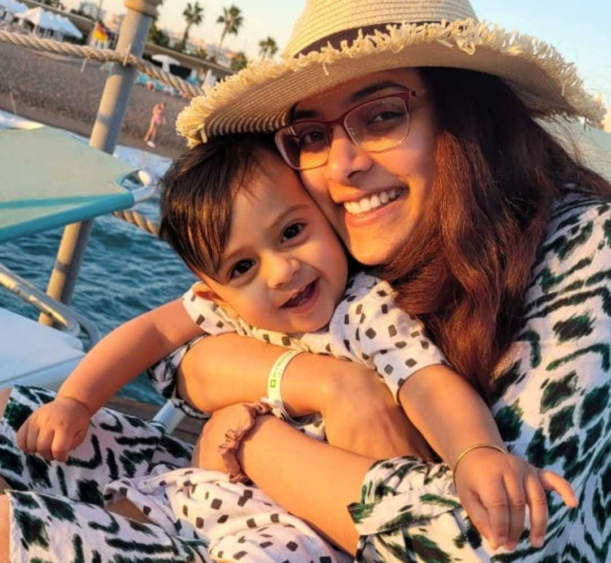

I am an Applied AI/ML Senior Research Engineer with interest and expertise in on-device AI, audio/speech AI, embedding models and LLMs.
I love designing, prototyping and pushing applications based on ML systems to production.
This blog contains technical deep-dives, research notes, and engineering lessons from my experience.
Understanding sampling, STFT, windowing, FFT, and log-mel features for modern speech models.